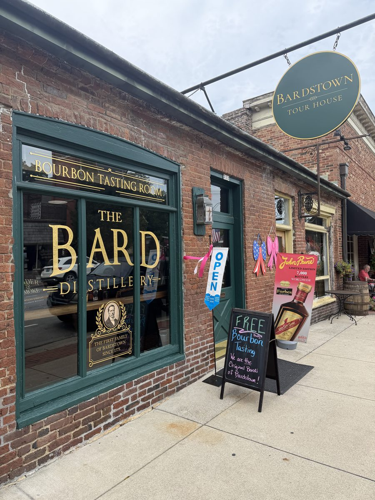
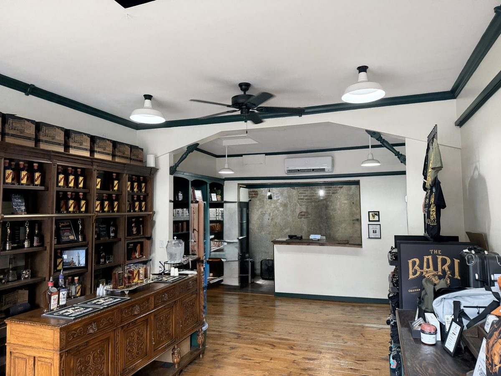
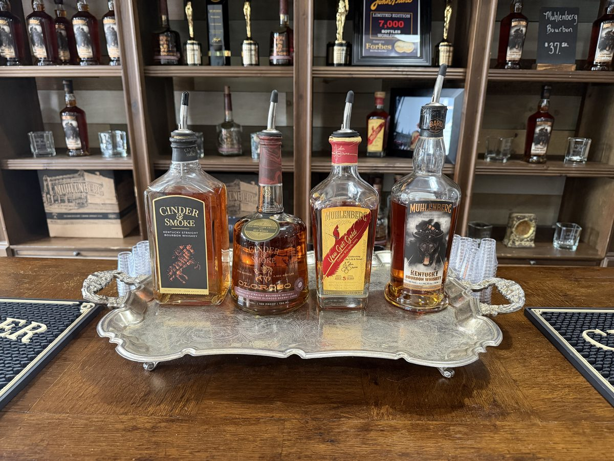
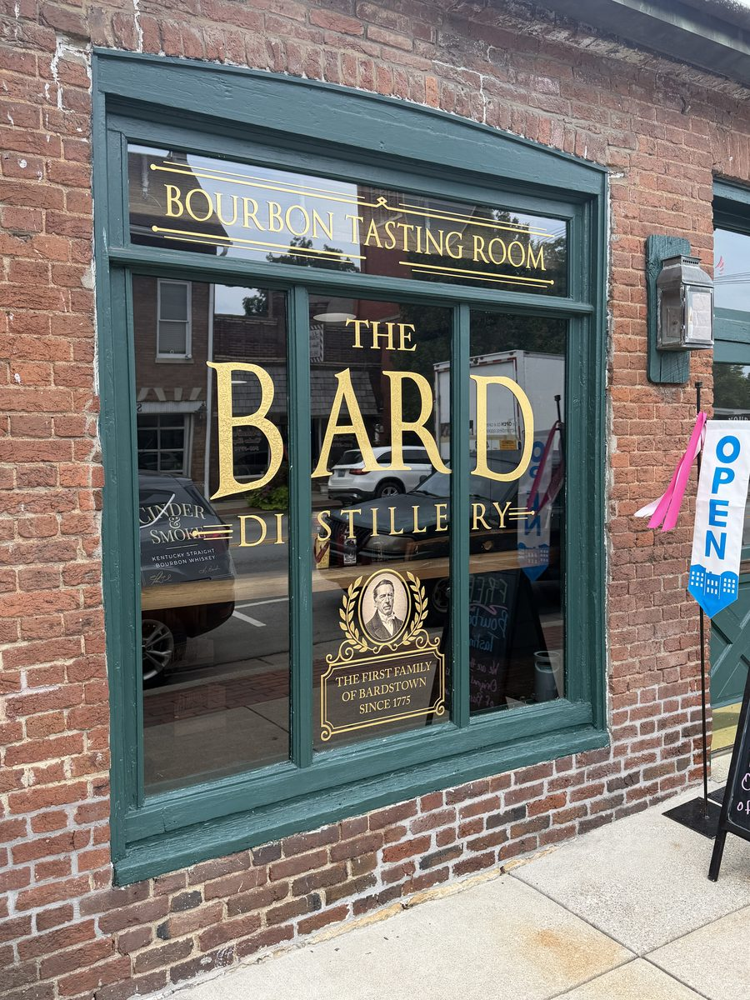

What to Expect
Most tasting rooms are a brand borrowing a busier street. This one is a homecoming. Thomas Bard is a fourth-great-grandson of William Bard, the surveyor who laid out Bardstown in 1780, and the gold crest painted on the window says so plainly: The First Family of Bardstown, Since 1775. For two centuries the family has been about as far from that town as you can get and stay in Kentucky, on the same patch of Muhlenberg County ground where the Graham distillery now sits in a restored 1920s schoolhouse. The storefront on North Third closes a loop that took 245 years.
Nothing is distilled here, and nobody pretends otherwise. What you get is a narrow brick front two blocks north of the square, green paint and gold leaf on the glass, hardwood floors, and a carved antique sideboard pressed into service as the tasting bar. Bottles and competition trophies fill the shelving behind it, the back wall by the register has been stripped to bare plaster and brick, and a rack of shirts and hats fills the far side. It reads more like a well-kept parlour than a bar, which suits a family operation better than another reclaimed-wood taproom would.
The pour list runs their whole lineup. Cinder & Smoke is the flagship Kentucky straight bourbon; the Oloroso edition finishes it in Spanish sherry casks at 100 proof and has the competition medals to show for it. Then the Muhlenberg bourbon at 101 proof, and the one worth asking about: Muhlenberg You Got Gold, a five-year bottling honouring John Prine, limited to 7,000 bottles worldwide. Prine wrote Paradise about Muhlenberg County, the same ground the distillery stands on, so the tribute is geography rather than licensing. If Kim or Tom Bard is behind the bar, ask Kim about her years driving in the NASCAR Busch series.
Photos from Our Visit

212 N Third Street, two blocks north of the square

An antique sideboard doing duty as the tasting bar

The pour list, including the John Prine You Got Gold bottling

The First Family of Bardstown, Since 1775
What's Here
The sandwich board on the sidewalk read FREE Bourbon Tasting when we stopped in, and that is the whole proposition: walk in off Third Street, work through the lineup at the sideboard, talk to whoever is pouring. No ticket, no time slot, no script. On a trail where most doors want twenty dollars and an hour of your afternoon, a free pour of a genuinely good high-rye bourbon is the easiest yes in Bardstown. Confirm it is still free when you walk in rather than assuming, since a sidewalk sign is not a published policy.
Half the floor is retail, and it is stocked well beyond the usual shot glass and t-shirt: bottles of the full range, shirts, hats, bags, glassware and bar mats, plus the John Prine edition when it is in stock. Chalkboard prices when we visited put Muhlenberg bourbon in the high thirties and Cinder & Smoke around sixty, which is the sort of shelf price that makes the free tasting look like a deliberate strategy rather than a promotion.
How to Visit
Walk in, no reservation, and unusually for this town it is open seven days: Monday through Saturday 11 AM to 6 PM, Sunday 1 PM to 6 PM. That Sunday opening matters more than it sounds, because a good share of Bardstown's distillery doors are shut or on short hours then, and this one is a few minutes' walk from the square. Budget twenty minutes if you are just having a pour, longer if the shop or the family story pulls you in. Street parking on Third, or leave the car at the square and walk up.
Best Experience
The free pour at the sideboard
Don't Miss
The John Prine You Got Gold bottling
Bottle Shop
One of the better small bottle shops in town, mostly because The Bard's own range is hard to find on shelves outside western Kentucky. If the John Prine edition is in stock it is the thing to buy: 7,000 bottles worldwide, and it will not be restocked.
Our Honest Ratings
The Bottom Line
The Bard's Bardstown room is not a tour and does not want to be one. It is a free pour, a good story, and a shop worth ten minutes, a couple of blocks off the square in a town where nearly every other door costs twenty dollars and an hour. Judged as a destination it is slight. Judged as what it actually is, the stop you make between two ticketed tours, it earns its place: walk-in seven days a week, almost never a queue, and a connection to the town that is genuine rather than marketing. Order the Cinder & Smoke and ask about the John Prine bottling. Do not drive from Louisville for it, and if you want to see how any of it is made, that trip is three hours west to Graham.
Practical Info
Address: 212 N 3rd St, Bardstown, KY 40004
Hours: Monday–Saturday 11 AM – 6 PM, Sunday 1 PM – 6 PM.
Parking: Street parking on North Third, or park at the square and walk.
Nearby & Pair With
Do not build a day around this one. Park at the square, take Chicken Cock and this room on foot in the same hour, and treat it as the free, unhurried stop between two ticketed tours. It also rescues a Sunday, when a lot of Bardstown is closed. See how the town fits together in our 3-day itinerary.
 Free Tasting
Free Tasting